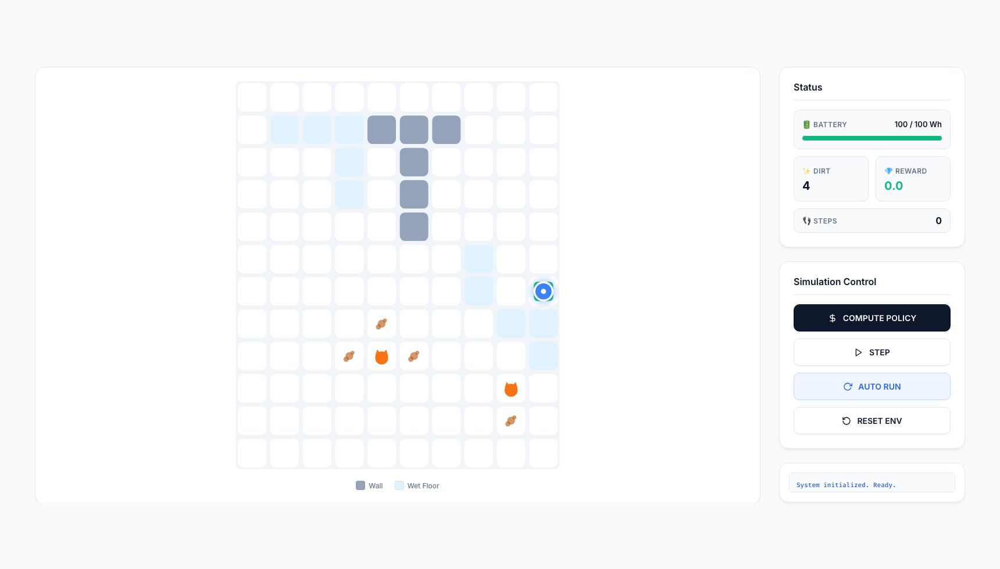
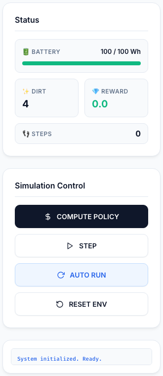

본 과제는 Markov Decision Process (MDP)의 핵심 구성 요소인 상태 공간, 전이 확률, 보상 함수, 종료 조건을 직접 정의하고, 이를 바탕으로 Value Iteration과 Policy Iteration을 구현해 최적 정책을 계산하는 실습입니다. 학생은 제공된 시뮬레이터를 수정하는 것이 아니라, tasks/ 내부의 task 파일을 순차적으로 완성하는 방식으로 과제를 수행합니다.
| 마감일 | 추후 LMS 또는 수업 공지 기준 |
|---|---|
| 구현 파일 | tasks/task1_states.py ~ tasks/task9_policy_iteration.py |
| 보고서 템플릿 | docs/01. report_template.docx 제공 |
| 제출 파일명 | 분반_학번_이름_AI과제4.zip 권장 |
| 실행 파일 | main_cli.py, main_web.py, tools/test_planners.py, tools/verify_performance.py |
| 수정 가능 범위 | tasks/ 내부 task 파일만 수정 권장, core/ 및 메인 실행 파일 수정 금지 |
| 권장 구현 순서 | Task 1~4 (MDP 모델링) → Task 5~6 (Value Iteration) → Task 7~9 (Policy Iteration) |
| 개발 환경 | Python 3.10 이상, uv sync 후 실행 권장 |
이번 과제에서는 로봇청소기가 확률적인 격자 환경에서 어떻게 행동해야 하는지를 MDP로 모델링합니다. 단순히 코드를 완성하는 것이 아니라, 어떤 상태가 필요한지, 이동이 왜 확률적이어야 하는지, 보상을 어떻게 설계해야 바람직한 행동이 유도되는지를 함께 고민하는 것이 핵심입니다.
과제는 총 9개의 task로 나뉘며, 앞의 4개 task에서 MDP의 기본 요소를 정의하고, 이후 Value Iteration과 Policy Iteration으로 최적 정책을 계산하는 순서로 진행됩니다.
이번 과제에서 고양이는 단순한 배경 장식이 아니라, 로봇의 정책을 어렵게 만드는 핵심 확률 요소입니다. 맵에서 K 로 표시되는 칸은 고양이 중심 칸이며, 그 주변 상하좌우 1칸까지를 고양이 영향권으로 봅니다.
또한 이번 과제의 고양이는 움직이지 않는 고정 장애물입니다. 만약 고양이의 좌표까지 매 턴 바뀌게 만들면 상태 공간이 급격히 커져서, 지금과 같은 tabular Value Iteration이나 Policy Iteration으로 다루기 훨씬 어려워집니다. 즉, 고양이는 강화학습에서 말하는 상태 공간 폭발을 설명하기 위한 교육용 장치이기도 합니다.
아래 이미지는 실제 웹 시뮬레이터를 실행한 뒤 캡처한 화면입니다. 학생은 정책 계산 결과가 실제로 어떻게 반영되는지 GUI를 통해 직관적으로 확인할 수 있습니다.


COMPUTE POLICY, STEP, AUTO RUN 버튼으로 시뮬레이션을 검증합니다.아래 순서대로 환경을 준비하고 CLI 또는 웹 GUI로 과제를 검증하십시오.
http://127.0.0.1:5050 에 접속합니다.COMPUTE POLICY 버튼은 내부적으로 Value Iteration과 Policy Extraction을 호출합니다. 따라서 최소한 Task 5와 Task 6이 구현되어야 웹 GUI가 정상 동작합니다.
이번 과제는 코드 구현뿐 아니라, 본인이 설계한 MDP와 실험 결과를 간단한 보고서 형태로 정리하는 것을 권장합니다. 패키지에는 이전 과제 스타일을 참고하여 정리한 docs/01. report_template.docx 가 포함되어 있습니다.
tools/test_planners.py 또는 tools/verify_performance.py 결과를 요약하여 포함하면 더 좋습니다.분반_학번_이름_보고서.pdfdocs/01. report_template.docx로 작성하고, 최종 제출은 PDF 변환을 권장합니다.
이 단계가 끝나야 Bellman update에 필요한 S, T, R이 모두 준비됩니다.
이 단계가 끝나면 main_cli.py 와 main_web.py 에서 정책 기반 시뮬레이션이 가능해집니다.
최종적으로 tools/test_planners.py 를 통해 Value Iteration과 Policy Iteration 결과를 비교할 수 있습니다.
| Task | 파일 | 핵심 구현 내용 |
|---|---|---|
| 1 | task1_states.py |
(x, y, dirt_mask, battery) 형태의 모든 유효 상태 생성 |
| 2 | task2_terminal.py |
배터리 방전 또는 모든 먼지 청소 후 복귀 시 종료 |
| 3 | task3_transitions.py |
이동, 청소, 충전에 대한 확률적 전이와 재오염 반영 |
| 4 | task4_reward.py |
이벤트별 보상 및 페널티 설계 |
| 5 | task5_value_iteration.py |
Bellman optimality update 반복 및 수렴 판정 |
| 6 | task6_policy_extraction.py |
최종 가치 함수로부터 최적 행동 추출 |
| 7 | task7_q_values.py |
Q(s, a) 기대값 계산 |
| 8 | task8_policy_evaluation.py |
고정 정책에 대한 V^pi(s) 계산 |
| 9 | task9_policy_iteration.py |
정책 평가와 정책 개선 반복 |
CHARGE 행동은 충전소에서만 유효해야 합니다.본 강의는 생성형 AI 도구의 사용을 무조건적으로 금지하지는 않으나, 책임감 있는 사용과 철저한 검증을 엄격히 요구합니다. 이번 과제는 MDP 모델링과 Dynamic Programming의 핵심 논리를 스스로 이해했는지 평가하기 위한 것이므로, 단순 복붙 형태의 사용은 권장되지 않습니다.
Task 5 수렴 조건 점검에 ChatGPT 사용, 최종 코드는 직접 수정 및 검증 완료 와 같이 짧게 남기면 됩니다.
특별한 추가 공지가 없다면, 학생이 직접 구현한 내용을 단일 ZIP 파일로 묶어 제출하는 형태를 권장합니다. 이번 패키지 구조상 가장 자연스러운 제출 방식은 보고서 PDF + tasks/ 폴더 전체를 함께 포함하는 것입니다.
분반_학번_이름_AI과제4.zip
분반_학번_이름_AI과제4.zip ├── 분반_학번_이름_보고서.pdf └── tasks/├── task1_states.py├── task2_terminal.py├── task3_transitions.py├── task4_reward.py├── task5_value_iteration.py├── task6_policy_extraction.py├── task7_q_values.py├── task8_policy_evaluation.py└── task9_policy_iteration.py
core/ 전체를 다시 압축하기보다, 학생이 구현한 tasks/ 폴더와 보고서 PDF 중심 제출이 더 명확합니다.tasks/ 내부 9개 파일의 NotImplementedError 가 모두 제거되었는가COMPUTE POLICY 이후 STEP 또는 AUTO RUN 이 동작하는가tools/test_planners.py 가 Value Iteration과 Policy Iteration을 모두 수행하는가